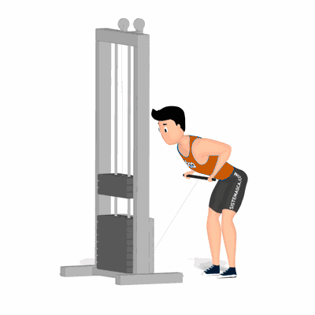

Remada Curvada no Cross Over

Exercício efetivo que abrange as dorsais. Uma alternativa utilizando a máquina Cross Over, não sendo diferente das demais variações livres. Realiza um movimento composto que estimula grandes músculos, demanda consciência corporal e de músculos auxiliares da região lombar. Indicado a praticante de musculação nível avançado.
Ficha Técnica
Tipo: Musculação
Grupo Muscular: Costas
Aparelho: Nenhum
Músculos: Nenhum
Como realizar
- Na posição em pé, pernas afastadas, joelhos semiflexionados;
- Pegue a barra do aparelho Cross Over com as mãos na mesma largura a dos ombros, pegada em pronação;
- Coluna alinhada incline o troco para frente e mova o quadril para trás, até a barra ficar na altura das coxas;
- Cotovelos estendidos puxe a barra até a cintura flexionando os cotovelos a lateral do corpo;
- Segure a contração por um instante e retorne a barra à posição inicial;
- Repita o movimento.
 RC STORE
RC STORE